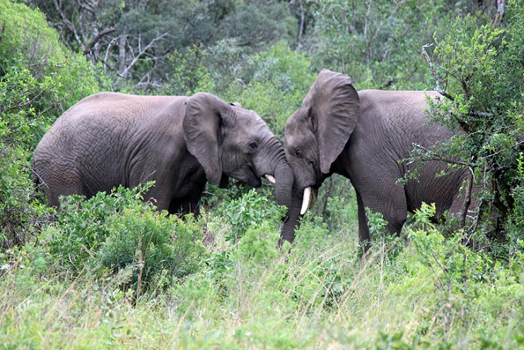
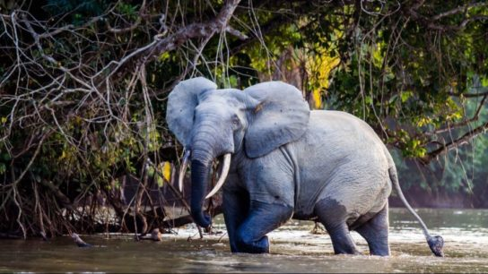
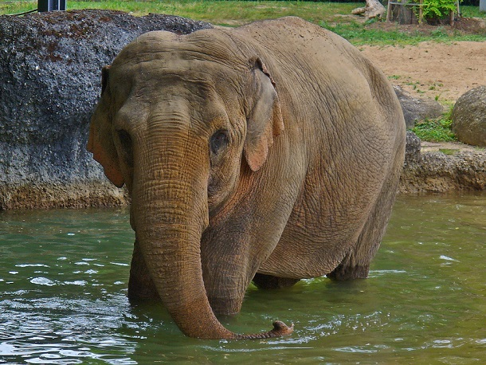
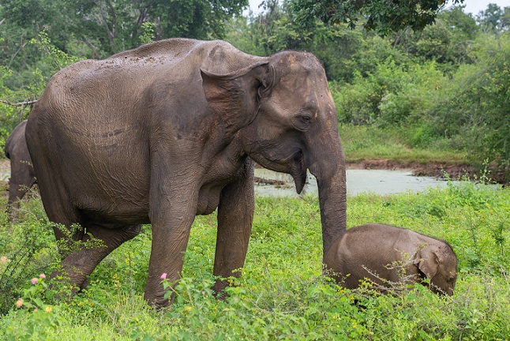

Все слоны мира!!
Африканский слон саванны
Это самое большое наземное животное. Как следует из названия, слоны пасутся в саванне, но некоторые обитают в пустынях Намиб и Сахара. Африканские саванные слоны светло-серые, крупные, и их бивни изгибаются наружу-вверх.
Лесной слон
Считался подвидом африканского саванного слона, но затем был классифицирован как отдельный вид, который возник 2-7 миллионов лет назад. Эти слоны меньше, имеют более округлые уши, их хоботы волосатее, чем у слонов саванны. Лесной слон темнее серого цвета и бивни более прямые и направлены вниз. Эти слоны предпочитает густые леса, причем большинство из них встречается в Габоне. Они питаются фруктами (листья и кора составляют остальную часть рациона), живут в небольших, изолированных группах от 2 до 8 членов.
Индийский слон
У него большая голова и короткие и мощные шея лапы. Большими ушами они регулируют температуру своего и общаются с другими слонами.
Шриланкийский слон
Самый крупный из азиатских подвидов. Шри-Ланка вмещает впечатляющее количество слонов для такой маленькой страны. Исследования показывают, что в Шри-Ланке самая высокая плотность слонов в Азии. Они живут в равнинных засушливых зонах на севере, востоке и юго-востоке страны. Шри-ланкийский слон имеет характерные пятна без пигментации, которые представляют собой участки шкуры без цвета на ушах, голове, туловище и животе. Этот слон является самым крупным и в то же время самым темным из подвидов азиатского слона. Отличается от африканского слона меньшими ушами и более изогнутым позвоночником. В отличие от африканских родственников, самки этого вида без бивней. У самок, у которых есть бивни, они очень маленькие, почти незаметные, видны только тогда, когда рот открыт. У самцов растут довольно длинные бивни, которые могут быть длиннее и тяжелее, чем у африканских слонов.